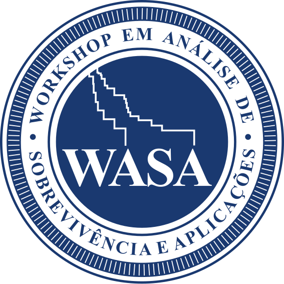
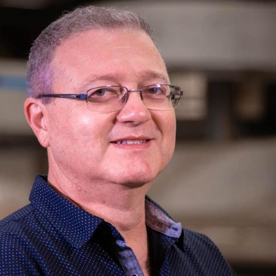
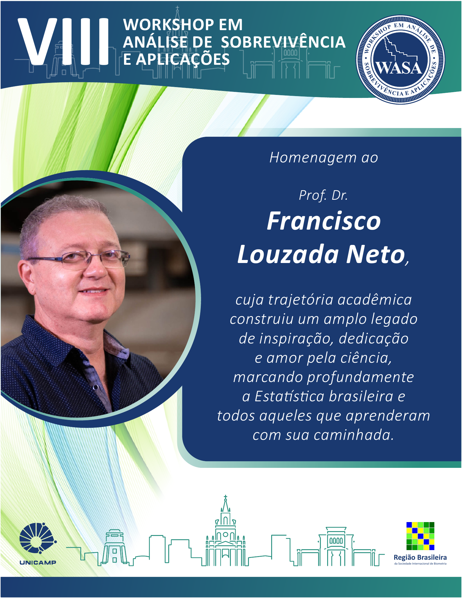
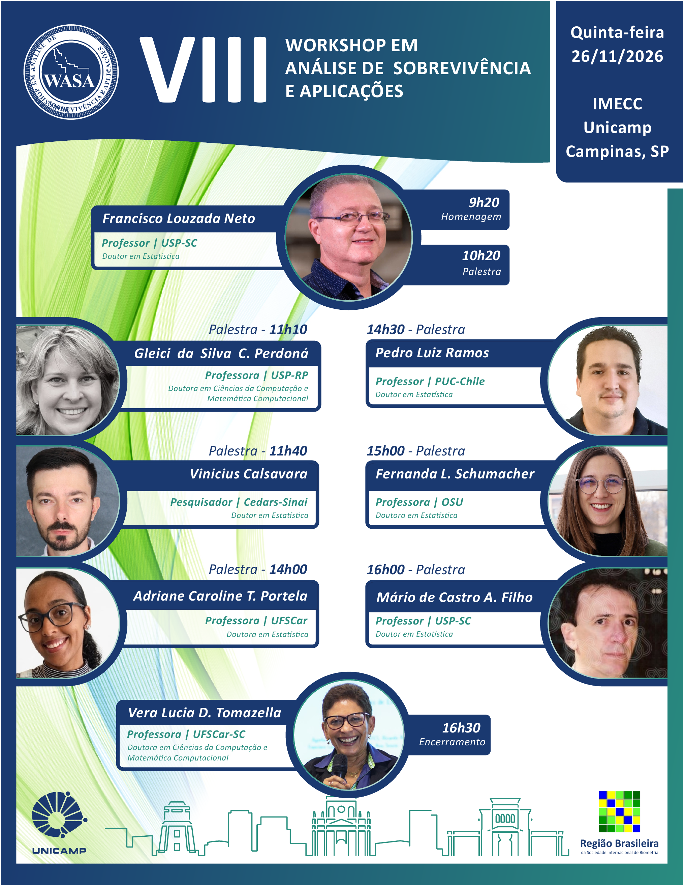

VIII Workshop em Análise de Sobrevivência e Aplicações
O WASA reúne pesquisadores da área de Estatística para discutir avanços em análise de sobrevivência, confiabilidade e aplicações. O evento também presta uma homenagem especial ao Professor Francisco Louzada Neto, por sua destacada trajetória e contribuição à Estatística e à Análise de Sobrevivência, marcada por liderança, dedicação e excelência.
Instituto de Ciências Matemáticas e de Computação
Universidade de São Paulo

Homenagem
Francisco Louzada Neto é Professor Titular da Universidade de São Paulo (USP), vinculado ao Instituto de Ciências Matemáticas e de Computação (ICMC) de São Carlos. Sua formação acadêmica inclui o bacharelado em Estatística pela Universidade Federal de São Carlos (UFSCar, 1988), o mestrado em Ciências da Computação e Matemática Computacional pela USP (1991) e o doutorado (PhD) em Estatística pela Universidade de Oxford, Inglaterra (1998). Iniciou sua carreira docente em 1989 como Professor Auxiliar na UFSCar, onde atuou por mais de duas décadas, chegando ao posto de Professor Associado, antes de sua migração para a USP em 2011.
Na esfera institucional, Louzada-Neto exerceu cargos de destaque, presidindo a Associação Brasileira de Estatística (ABE) em dois mandatos (2012-2014 e 2016-2018). Atualmente, é Diretor do Centro de Ciências Matemáticas Aplicadas à Indústria (CeMEAI), um Centro de Pesquisa, Inovação e Difusão (CEPID) financiado pela FAPESP, além de coordenar o Laboratório de Estudos do Risco (CER-USP) e o MBA em Ciência de Dados do CeMEAI. Também é membro eleito do International Statistical Institute (ISI) e atuou como representante da América Latina no comitê do Prêmio Internacional Mahalanobis em 2021.
Sua atuação científica concentra-se em Ciência de Dados e Estatística, com ênfase em Análise de Sobrevivência e Confiabilidade, Aprendizado de Máquina, Inferência e Modelos de Risco. É editor do periódico Sankhya A e de séries de livros de estatística da Springer e da Blucher, tendo também integrado o corpo editorial de diversas revistas nacionais e internacionais. Ao longo da carreira, recebeu reconhecimentos como o Arnold Prize da Royal Statistical Society (1998) e a Medalha de Honra da UFSCar, consolidando-se como uma das principais referências da estatística brasileira.

Clique para ampliar
Programação preliminar, sujeita a alterações. Os títulos das palestras serão divulgados em breve.
Legenda

Clique para ampliar
Instituto de Matemática, Estatística e Computação Científica
Instituto de Matemática, Estatística e Computação Científica (IMECC)
Universidade Estadual de Campinas
Rua Sérgio Buarque de Holanda, 651 · Cidade Universitária Zeferino Vaz
Campinas, SP · CEP 13083-859
O WASA acontece no dia seguinte ao encerramento da 70ª RBras, no mesmo campus e prédio do evento principal.
Como chegar ↗Profissionais
R$ 50
Estudantes
R$ 25
graduação e pós-graduação
Formas de pagamento
A inscrição será confirmada somente após a comprovação do pagamento.
Dúvidas: wasasurvival@gmail.com